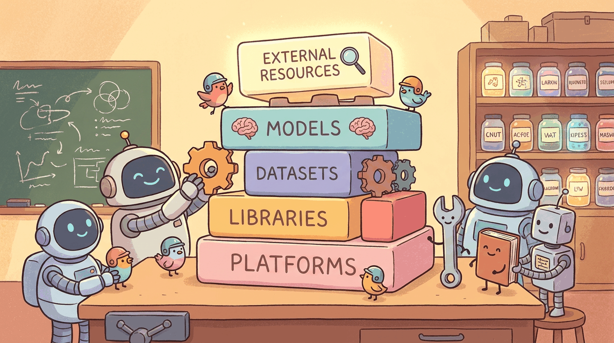

"Pretraining is geology. Fine-tuning is gardening."
Author's notebook
Part IV moved from "calling models" to "shaping models": SFT, instruction tuning, RLHF/RLAIF, DPO, and the parameter-efficient methods (LoRA, QLoRA). This chapter consolidates the toolbox: transformers as the training engine, TRL for SFT/DPO/RLHF/GRPO, PEFT for adapters, axolotl and lit-gpt as the high-level recipe layers, the instruction datasets (Alpaca, ShareGPT, FineWeb-Edu), and the experiment trackers (Weights & Biases, MLflow) that keep multi-day runs reproducible.
If you want one stack that covers SFT, LoRA, DPO, and GRPO:
pip install transformers trl peft accelerate bitsandbytesThat set fine-tunes anything up to 70B on a single 80 GB GPU with QLoRA, runs DPO out of the box, and integrates with W&B for tracking. Appendix L covers the distributed-training side.